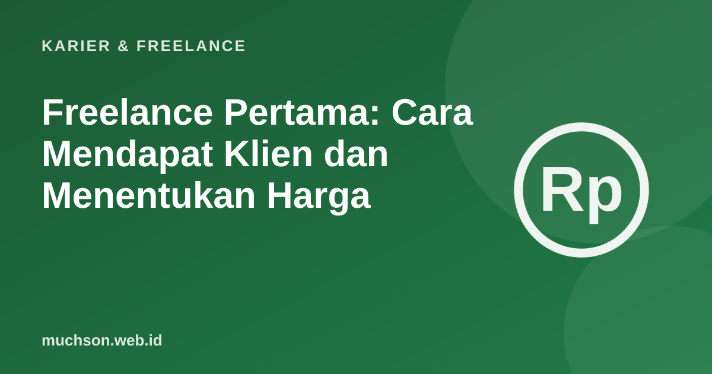

Beranda › Artikel › Karier & Freelance
Karier & FreelanceFreelance Pertama: Cara Mendapat Klien dan Menentukan Harga
Menjadi freelance bukan hanya soal kemampuan teknis. Anda juga menjual, menegosiasi, dan mengelola proyek. Kabar baiknya, klien pertama biasanya datang dari lingkaran terdekat, dan hal-hal dasarnya bisa dipelajari.

Mulai dari layanan yang spesifik
"Saya bisa membuat apa saja" sulit dijual. "Saya membuat landing page cepat untuk usaha kecil" mudah dipahami. Layanan yang spesifik memudahkan klien mengenali bahwa Anda menjawab kebutuhan mereka, dan memudahkan Anda memperbaiki proses.
Menentukan harga
Isi penawaran yang jelas
Catatan
Untuk kontrak besar atau pekerjaan berisiko hukum, konsultasikan dengan ahli hukum. Artikel ini edukatif dan bukan nasihat hukum atau keuangan.
Tanya jawab
Di mana mencari klien pertama?
Mulai dari jaringan dekat: teman, komunitas, usaha lokal, dan alumni. Lalu platform freelance dan media profesional.
Apakah perlu platform freelance?
Berguna untuk memulai dan membangun reputasi, tetapi biasanya ada biaya dan persaingan. Gabungkan dengan jaringan langsung.
Bagaimana menghadapi klien yang terus meminta revisi?
Kembali ke perjanjian: jumlah revisi yang termasuk, dan tawarkan biaya tambahan di luar itu dengan sopan.